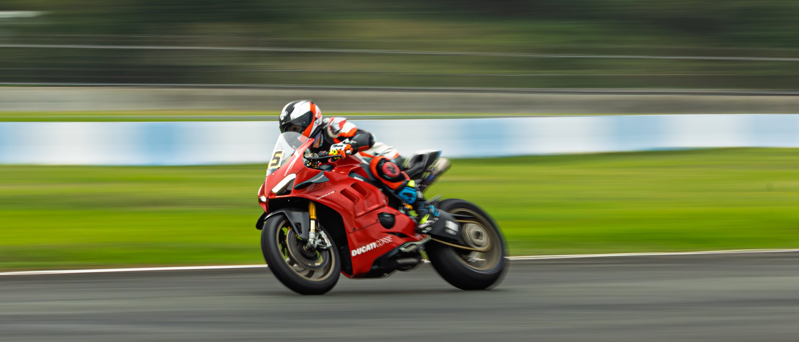
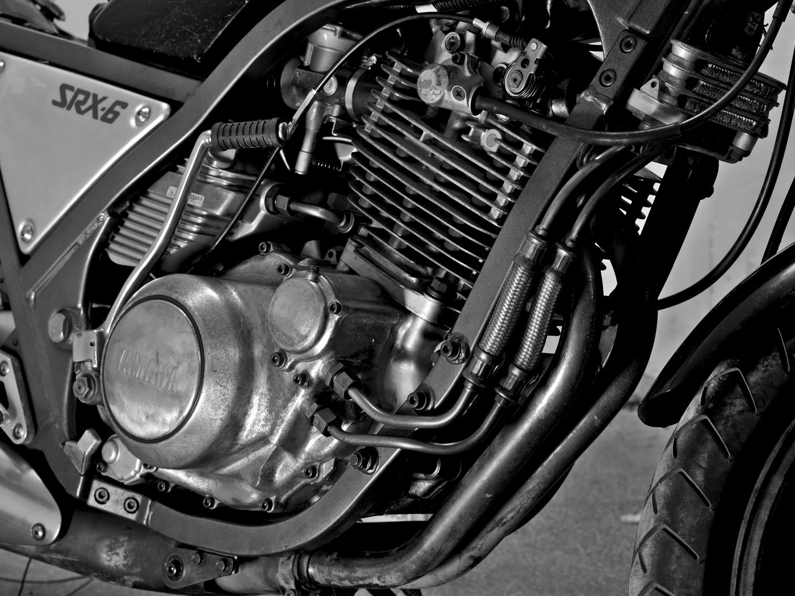
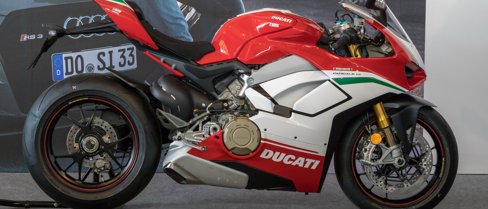
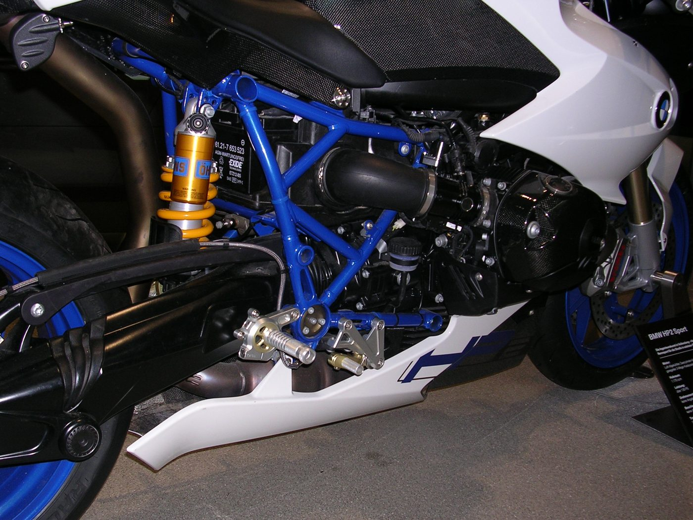
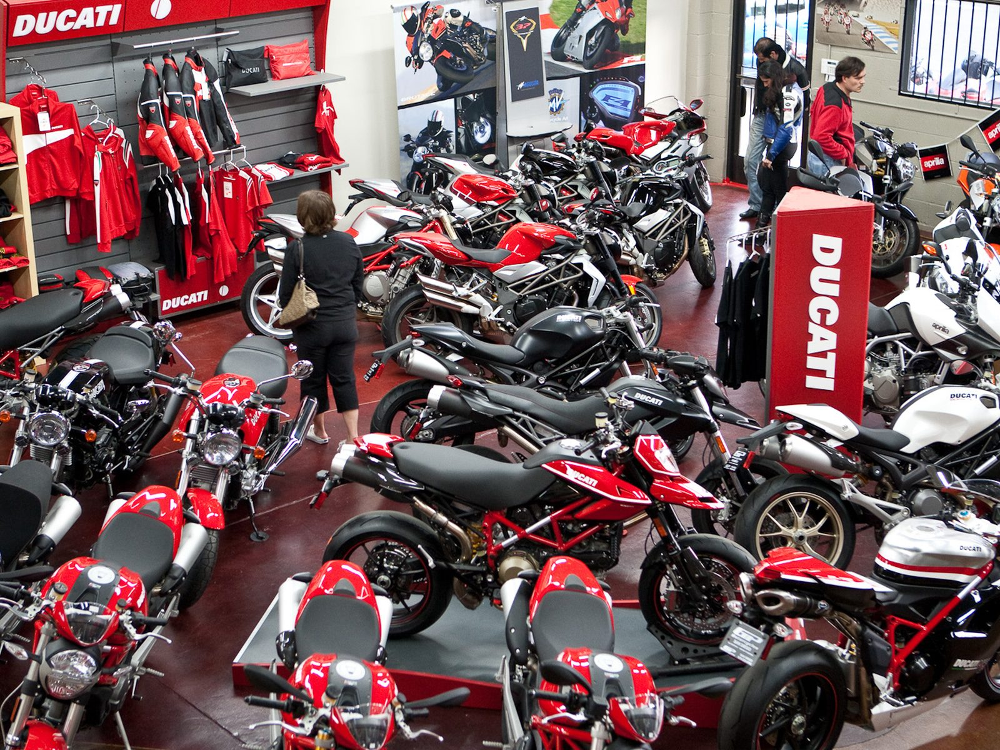

Vendita e officina moto — Milano
Vendiamo moto.
E le teniamo vive.
Kronos Moto è concessionaria e officina specializzata a Milano. Moto usate controllate una per una, e un'assistenza multimarca che tratta la tua moto come se fosse la nostra.

01 — Vendita
Usato
02 — OfficinaAssistenza
Assistenza
multimarca
03 — RicambiRicambi e
Ricambi e
accessori
04 — PreventiviPreventivo
Preventivo
prima di toccarla
Chi siamo
Un'officina
prima che
un negozio
Kronos Moto nasce a Milano da chi le moto le smonta, non solo le vende. In esposizione trovi usato selezionato e controllato; dietro, un'officina attrezzata che segue la moto per tutta la sua vita — tagliandi, diagnosi, assetto, freni, gomme, preparazione.
Nessun preventivo a sorpresa: si guarda la moto, si spiega cosa serve davvero e cosa può aspettare, e solo dopo si mette mano.
Vieni a trovarci →
I nostri plus
Perché portarla
da noi
01
Officina multimarca
Stradali, sportive, naked, custom e scooter. Un solo interlocutore per manutenzione ordinaria e interventi specialistici.
02
Usato verificato
Ogni moto in esposizione passa un controllo meccanico ed estetico prima di essere messa in vendita. Storia e tagliandi alla mano.
03
Ricambi e accessori
Ricambi originali e aftermarket, pneumatici, batterie, olio e abbigliamento tecnico — ordinati e montati in sede.
04
Preventivo chiaro
Diagnosi, cifra e tempi prima di iniziare. Se durante il lavoro cambia qualcosa, ti chiamiamo: non si procede senza il tuo ok.


Officina specializzata
Ogni moto esce
solo quando
è pronta
Banco, ponte e strumentazione diagnostica in sede. Si parte dal problema che hai raccontato, si verifica sulla moto e si interviene su quello — senza gonfiare la lista.
- Tagliando e manutenzione programmata
- Diagnosi elettronica ed errori centralina
- Freni, dischi e spurgo impianto
- Sospensioni, assetto e taratura
- Gomme, equilibratura e allineamento
- Catena, corona, pignone e trasmissione
- Batteria, impianto elettrico e ricarica
- Revisione e preparazione pre-vendita
Servizi
Cosa facciamo
Tagliando e manutenzione
Olio, filtri, candele, liquidi e controlli di sicurezza secondo il piano della casa madre. Libretto aggiornato.
Diagnosi elettronica
Lettura e cancellazione errori, controllo sensori, mappature e problemi di avviamento o ricarica.
Gomme ed equilibratura
Montaggio, smontaggio ed equilibratura pneumatici, con consiglio sulla gomma giusta per come la usi.
Sospensioni e assetto
Revisione forcelle e mono, cambio olio, taratura precarico e idraulica in base al tuo peso e al tuo uso.
Freni e ciclistica
Pastiglie, dischi, pompe, tubi in treccia e spurgo. Controllo cuscinetti, forcellone e geometrie.
Preparazione e accessori
Scarichi, protezioni, portapacchi, illuminazione e personalizzazioni — montate e collaudate in officina.
Vendi la tua moto
Ti liberiamo noi
dal garage
Valutiamo la tua moto sul posto e ti diciamo subito cosa possiamo fare: acquisto diretto, permuta su una moto in esposizione o vendita in conto vendita, con la moto esposta e curata da noi.
Pratiche, passaggio di proprietà e documenti li gestiamo noi. Tu porti la moto e le chiavi.
Fai valutare la tua moto →
Marchi trattati
Domande frequenti
Le cose che
ci chiedete sempre
Lavorate su tutte le marche?
Sì. L'officina è multimarca: stradali, sportive, naked, custom, enduro e scooter. Se un intervento richiede attrezzatura o ricambi specifici ti diciamo subito tempi e costi prima di prendere in carico la moto.
Devo prendere appuntamento?
Per un tagliando o un intervento programmato sì, così la moto entra subito in lavorazione e non resta ferma. Per un controllo veloce o un preventivo puoi passare in negozio negli orari di apertura.
Fate il preventivo prima di intervenire?
Sempre. Guardiamo la moto, ti spieghiamo cosa serve adesso e cosa può aspettare, e ti diamo cifra e tempi. Non si procede senza il tuo ok, e se durante il lavoro emerge altro ti chiamiamo prima di continuare.
Le moto usate che vendete come sono controllate?
Ogni moto passa dall'officina prima di andare in esposizione: controllo meccanico, ciclistica, freni, gomme, elettronica ed estetica. Ti mostriamo la moto sul ponte e ti raccontiamo la sua storia, tagliandi compresi.
Accettate permute o ritirate la mia moto?
Sì. Possiamo acquistarla direttamente, prenderla in permuta su una moto in esposizione oppure tenerla in conto vendita. Passaggio di proprietà e pratiche le gestiamo noi.
Vendete anche ricambi e accessori?
Sì: ricambi originali e aftermarket, pneumatici, batterie, olio, protezioni e abbigliamento tecnico. Se non è a magazzino lo ordiniamo e, se vuoi, lo montiamo direttamente in officina.
Contatti
Portala qui.
Ci pensiamo noi.
Chiamaci per un appuntamento in officina, una valutazione della tua moto o per sapere cosa abbiamo in esposizione.
Dove siamo
Kronos Moto
Via Ajaccio 4
20133 Milano (MI)
Orari
Lunedì – Venerdì 09:00 – 13:00 / 14:30 – 19:00
Sabato 09:00 – 13:00
Domenica chiuso